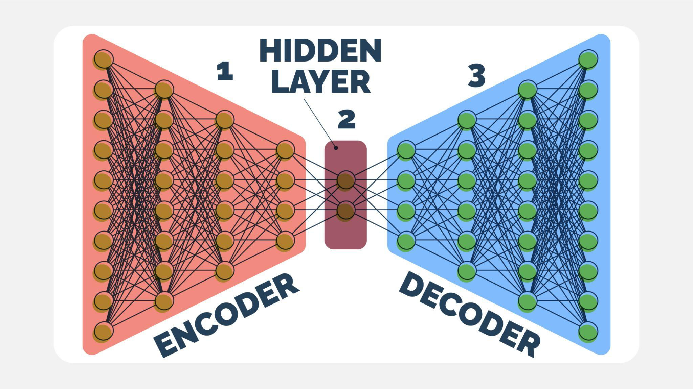

Autoencoders
Aprendizaje de Representaciones Latentes
Deep Learning con Python
Cesar Garcia · 2025
📓 Abrir en Colab
← Inicio
Introducción
Objetivos
- Retomar la idea de representaciones internas
- Introducir autoencoders como modelos no supervisados
- Entender el rol del cuello de botella
- Preparar el terreno para VAEs
💭 ¿Puede una red aprender algo útil sin etiquetas?
¿Qué es un autoencoder?
Definición y arquitectura general
Un autoencoder es una red neuronal que aprende a:
- comprimir los datos de entrada
- reconstruirlos a partir de una representación interna
Entrada = Salida (idealmente)
Encoder → Latent Space → Decoder
Encoder: reduce dimensionalidad |
Latente: representación comprimida |
Decoder: reconstruye la entrada
💭 Si la salida es igual a la entrada, ¿qué está aprendiendo realmente?
Autoencoder en acción
Imagen de referencia

💭 ¿Dónde ocurre realmente el aprendizaje importante?
El encoder como extractor
Intuición
El encoder actúa como:
- extractor de características
- organizador del espacio
- función de compresión aprendida
No proyecta al azar: aprende una geometría útil.
💭 ¿Qué información decide conservar el encoder?
El cuello de botella
Bottleneck
Forzamos al modelo a:
- perder información irrelevante
- conservar estructura esencial
Esto evita la solución trivial de copiar la entrada.
💭 ¿Qué pasaría si el espacio latente fuera muy grande?
Función de pérdida
Reconstrucción
La pérdida mide qué tan bien el decoder reconstruye:
MSE
datos continuos
Binary Cross-Entropy
imágenes normalizadas
No hay etiquetas externas — la supervisión viene de la propia entrada.
💭 ¿Qué tipo de errores penaliza esta pérdida?
Autoencoders vs PCA
Comparación conceptual
| PCA | Autoencoder |
|---|
| Tipo | Lineal | No lineal |
| Solución | Cerrada, analítica | Aprendida por gradiente |
| Flexibilidad | Limitada | Alta |
Un autoencoder puede verse como PCA no lineal entrenado por gradiente.
💭 ¿Qué ventaja aporta la no linealidad?
Visualizando el espacio latente
Por qué importa
Si el modelo aprendió bien:
- puntos similares → cercanos
- clases se organizan espontáneamente
Esto conecta con la sesión anterior.
💭 ¿Cómo sabrías si el espacio latente es bueno?
Del encoder al generador (preview)
Limitación clave
Un autoencoder estándar:
- aprende representaciones
- no es generativo
No sabemos cómo muestrear su espacio latente.
Muestrear $z$ al azar suele producir resultados sin sentido.
💭 ¿Qué falta para poder generar nuevos datos?
Idea clave de la sesión
Aprender comprimiendo
Un autoencoder:
- no memoriza píxeles
- aprende qué es esencial
- organiza el espacio sin supervisión
Representar es decidir qué ignorar.
💭 ¿Qué conexión ves con la generalización?